ハウス オブ ロータスの、夏の服。
大きな歩幅で。
太陽がまぶしい季節にぴったりの、
おしゃれで快適な服、ここにあります。
ギンガムチェックワンピース
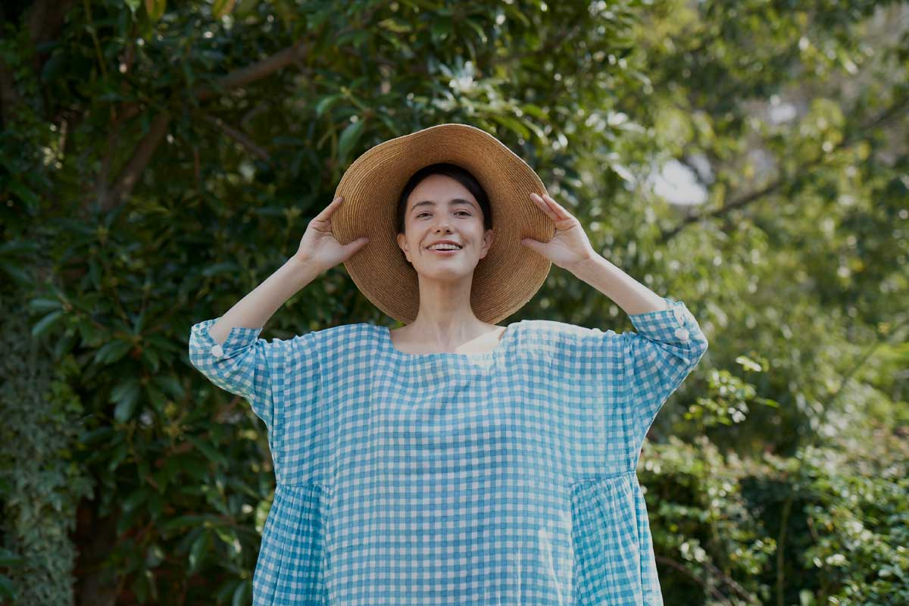
ふんわりと軽い布地を、たっぷり使った、
からだも、心も、自由になれそうな、
おしゃれで着心地のよいワンピースです。
このワンピース、インドでつくられています。
雑貨だけのお店だった「ハウス オブ ロータス」で、
洋服づくりをはじめたとき、
いちばん最初につくったのが、この服。
原点のような存在であり、ずっと人気のアイテムです。
世界のさまざまな手仕事が大好きなかれんさん、
ワンピースをつくるにあたって、
インドの職人の手によるスクリーンプリントで、
ギンガムチェックの布をつくりました。
手仕事ならではの、ゆらぎのあるチェックは、
ふんわりとした濃淡やにじみで、
織りでつくられたチェックにはない、
やわらかでやさしい雰囲気がうまれました。
襟ぐりや、ギャザーの切り替え、
女性らしく、大人っぽい華やかさがあります。
アクセントの小さなポンポンは、
インドの民族衣装に由来する、手作りのもの。
こんな遊びごころも、かれんさんが提案する
暮らしの中の彩りのひとつです。
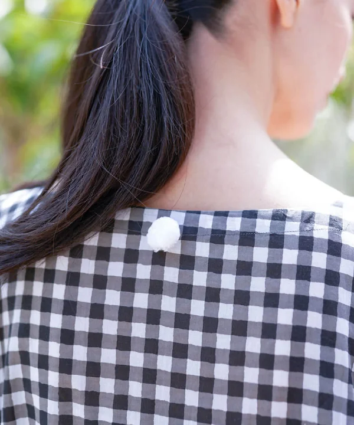
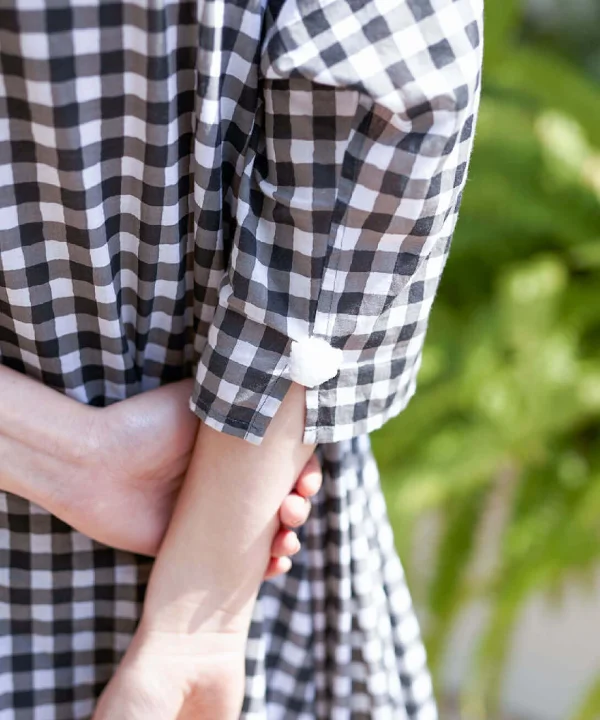
色は、６色。
元気が出そうなイエローやピンク、グリーン。
さわやかなターコイズブルー、
グレーとブラックは、ちょっとシックに。
グリーンとグレーは、ほぼ日だけのカラーです。
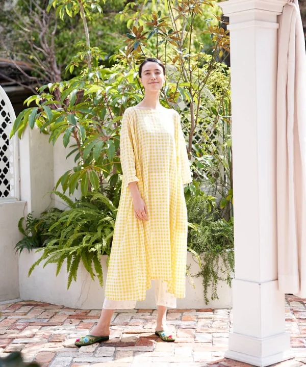
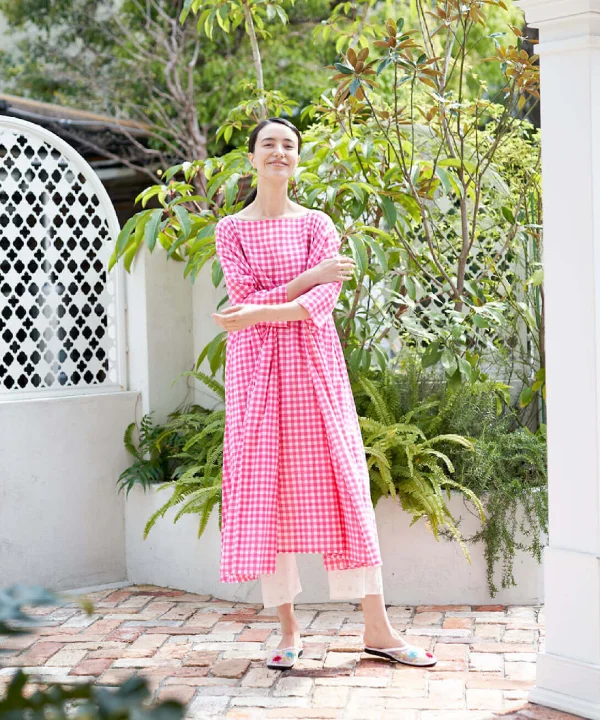
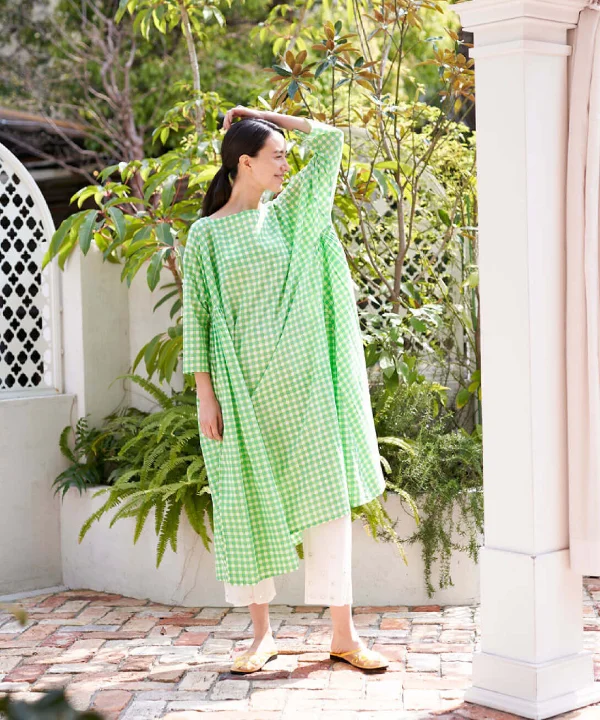
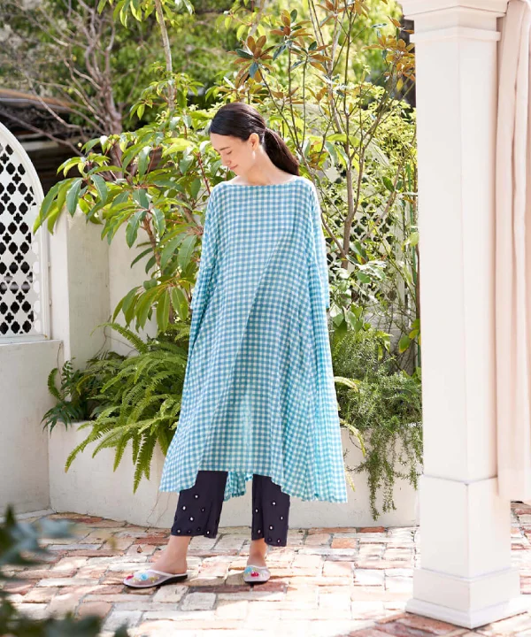
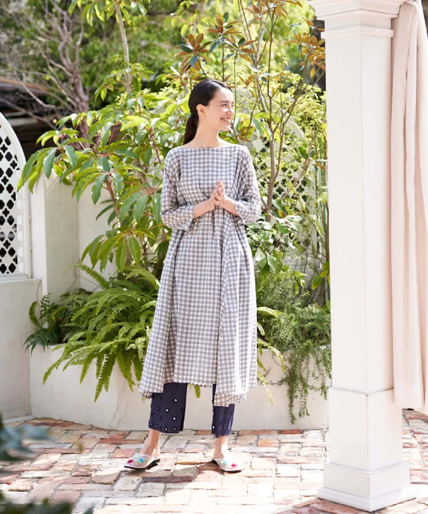
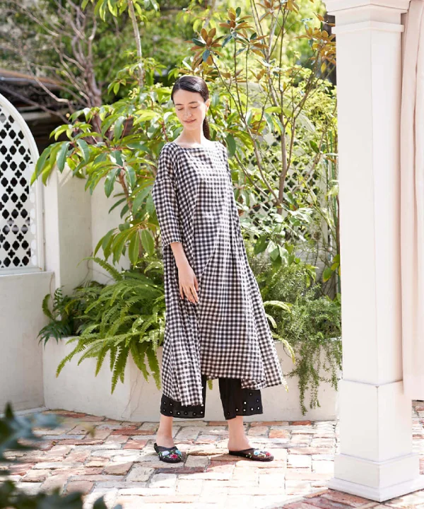
ギンガムチェックブラウス
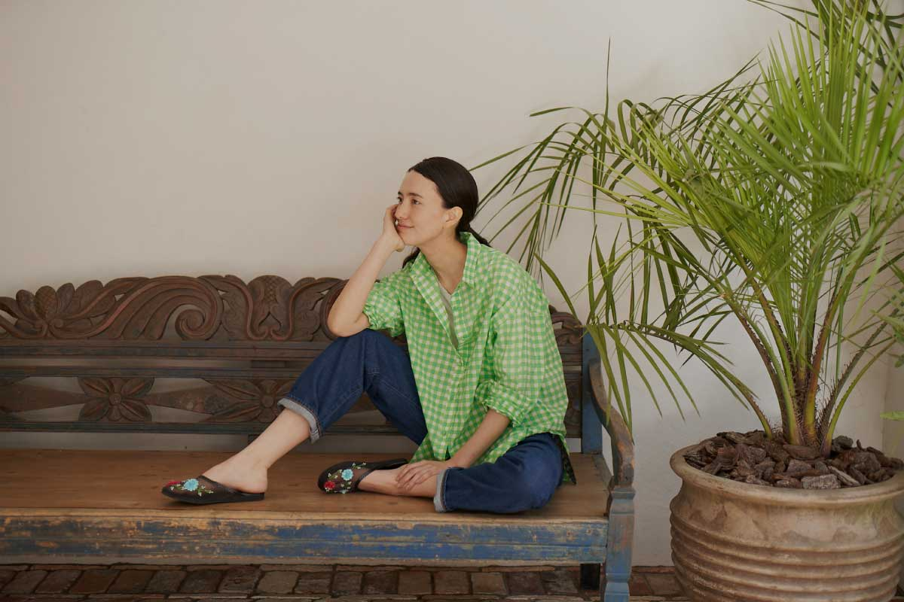
たっぷり、ゆったり。
オーバーサイズのシャツブラウスです。
ギャザーワンピースと同じ、
ギンガムチェックの布。
色も同じ、６色がそろっています。
パンツにも、スカートにも合わせやすい、
ほどよく長い着丈です。
ボトムスにインしたり、裾を結んだり、
前ボタンを開けて、はおりものとしても。
いろいろに楽しめるアイテムです。
このシャツブラウスは、
４月の「生活のたのしみ展」を機に、
ほぼ日のためにつくってくださったもの。
かたちはベーシックですが、
細かいところに詰まった手仕事を見るのが、
楽しいんです。
共布の、まあるいボタン。
このまん丸のボタンは、
綿を布で包んで、手縫いで作られています。
着ているときやお洗濯のとき、
微笑んでしまいそうなポイントですね。
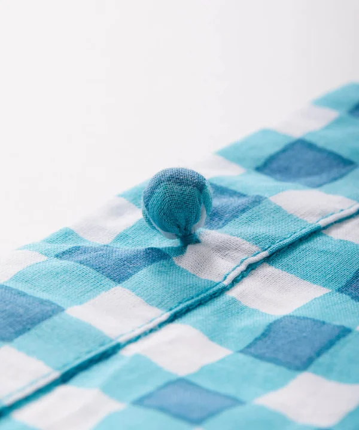
ミラーワークパンツ
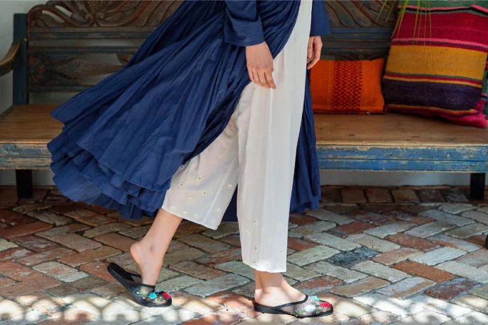
ワンピースにアンダーパンツというのは、
かれんさんが提案する組み合わせ。
あくまで主役はワンピースなのですが、
アンダーパンツをはくと、
足元にもうひとつの表情がうまれるんです。
裾には、ちいさな鏡が手刺繍で縫いとめられていて、
歩くたびにキラキラと光るようすが、とてもきれい。
鏡も、手作業で割ってつくられています。
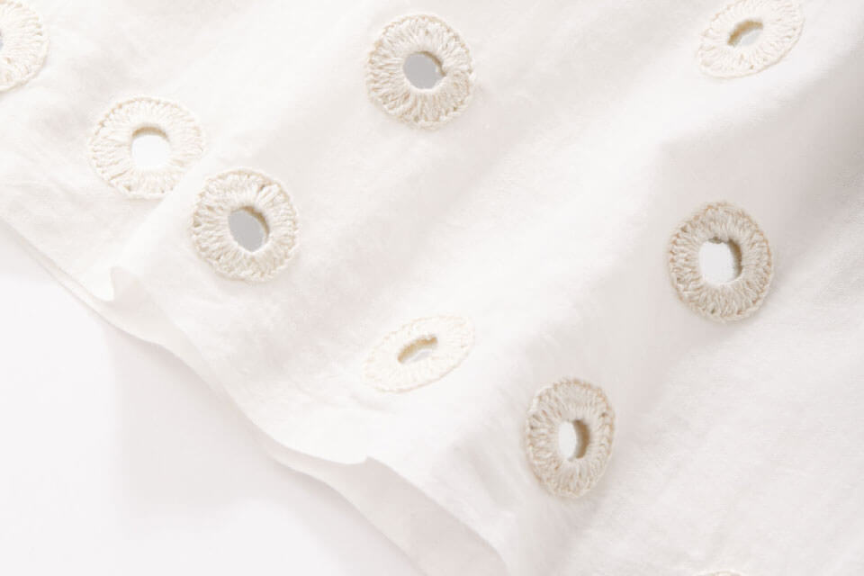
このミラーワーク、
インド西部の砂漠地帯、グジャラート州では、
魔除けの意味をもつのだそう。
そんな手仕事をさりげなく取り入れたのが、
このパンツです。
やわらかなコットン素材、ウエストはゴムで、
リラックスしつつ、活動的に動けます。
ほどよいゆとりがあるので、
脚のラインが気にならず、
風をはらんだ裾がひるがえっても安心。
大きな歩幅で、どんどん歩きましょう。